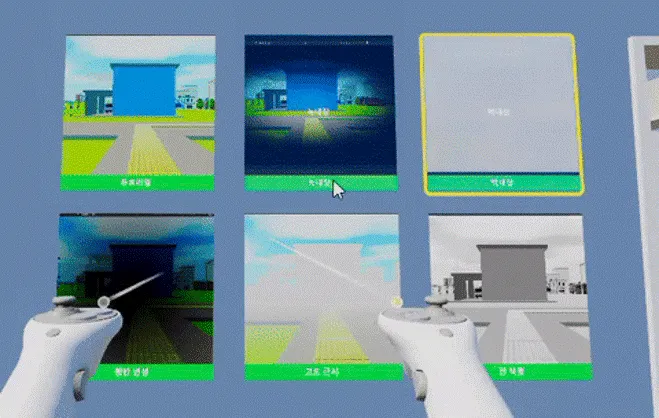

다양한 시각 장애 체험
탭을 눌러 5가지 시각 장애가 실제로 어떻게 보이는지 직접 비교해보세요
 LIVE PREVIEW
LIVE PREVIEW
정상 시야
또렷한 색 대비와 선명한 초점. 우리가 당연하게 여기는 세상의 기본값입니다.
보이지 않는 세계에서, 보이는 이야기를 찾다
시각장애인의 일상을 직접 체험하고 이해하는 것.
가장 혁신적이고 몰입감 있는 방법, Blind Walker와 함께하세요.

탭을 눌러 5가지 시각 장애가 실제로 어떻게 보이는지 직접 비교해보세요
LIVE PREVIEW
또렷한 색 대비와 선명한 초점. 우리가 당연하게 여기는 세상의 기본값입니다.
시각 정보 없이 오직 음향만으로 길을 찾아 이동합니다. 횡단보도의 신호음, 도시의 소음, 그리고 지팡이의 감각을 통해 공간을 인지하고 이동하는 경험을 해보세요.


Unity 엔진 위에서 직접 만든 커스텀 툴과 시스템으로 완성한 시뮬레이션
도시 환경 곳곳에 배치된 WP 노드를 연결해 NPC와 사운드 소스가 자연스럽게 경로를 인지하도록 설계했습니다.

Fog Density, Bloom, Saturation 등 파라미터를 실시간으로 조절해 5가지 시각 장애의 증상을 그대로 재현합니다.

점자블록과 이동 경로를 손쉽게 배치할 수 있는 자체 제작 Unity 에디터 확장 툴을 개발했습니다.

지팡이 끝이 점자블록과 장애물에 닿을 때 진동과 사운드로 피드백을 주는 인터랙션 시스템을 구현했습니다.
시각장애인의 일상을 경험하는 것.
가장 혁신적이고 감동적인 VR 어드벤처로 당신의 이해를 완성하세요.